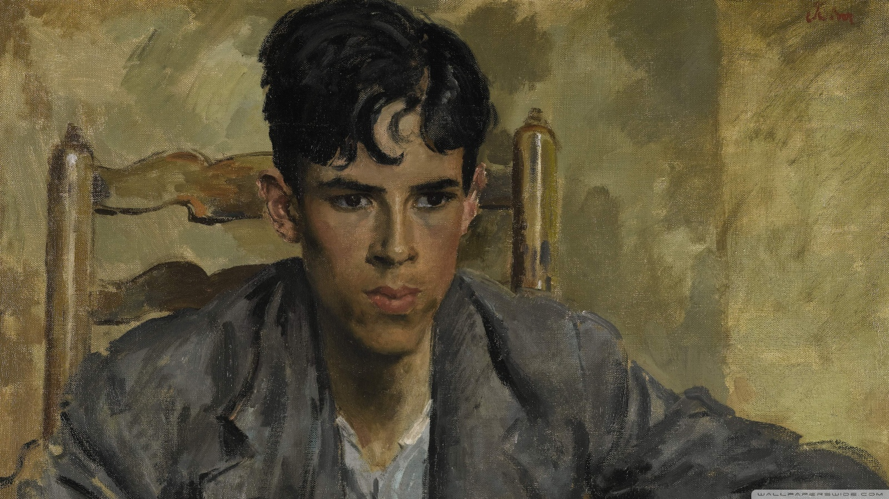

Various pieces of fiction I have written.
(new story whenever I finish one)
...
In fact, the figure hadn’t been able to breathe for a very long time, and yet it kept on living.
“This piece sold here for…Jeremy?”
“2 million.”
“Yes. Come.” The woman in the white suit strode along to another painting and pointed at it. “This one, we brought in from Iceland. Rather macabre for my taste, but again, it sold. We had someone buy it for…how much Jeremy?”
“800 thousand.”
“800 thousand.” The woman in the white suit, tight-lipped, looked the young artist up and down. “As you can see there will be no shortage of compensation should we choose to accept you. I don’t mean to gloat, but our last showing saw us sell every painting but one, and we totalled at…Jeremy?”
“12 million.”
“I think you understand.” The woman in the white suit stared at the young artist. “I understand that you have worked with Helen before?”
“Yes, I’ve produced pieces for two of her galleries. She was great to work with, the whole process felt very inviting.” She forced an uncomfortable smile at the woman in the white suit.
“Helen was an amateur, my dear. I hate to say that about her, we are good friends, but what she produces is…is…what’s the word I’m looking for, Jeremy?”
“Unsatisfactory.”
“I mean I wouldn’t say that about her galleries, a lot of people like them.” The young artist thought about the amazing experience she’d had with Helen and the impact she felt they made together. “I’ve only good things to say about Helen. ”
“Unsatisfactory, my dear.” The woman in the white suit paused for a moment, as if to signal the end of that discussion. “You are moving beyond Helen. You are entering a space where the art itself changes the world. Powerful people attend my galleries, so I must carefully select paintings that will inspire positive change. Economics, politics, and global influence are all at stake. Very volatile work, dear.”
The woman in the white suit stared into the eyes of the young artist and punctuated each word, “I don’t think it is unlikely that I have bettered the world with my galleries.”
“That’s very impressive.” The young artist scratched the inside of her hand and struggled to meet the woman’s gaze.
“Well, you come at high recommendation, although I must add, from a low place, but regardless, you do come with high recommendation. So, let’s see what you have to offer.”
“Right here?”
“I can’t think of anywhere else.”
“Ok. I just have some pictures on my phone, they won’t look as good. And if the people who go here are as well off as you say, I don’t know if they will like them. They might find them a little provocative.”
“Oh, they love provocative. All the wealthy ones are masochists. They like hearing about how evil and powerful they are. Don’t be shy now.”
The young artist took out her phone. The gallery sat silent as the artist swiped through her portfolio.
“Jeremy, how many spots do we have left for the showing in March?”
“2.”
“Has the one with the seal been displayed before?”
“No, it hasn’t.”
“And the one with the oil?”
“That one hasn’t either.”
“Good, March is when we have our charity showing, so those should sell quite easily.”
“So, you’ll take them?”
“Yes, on account of a favour from you. Follow me.” The woman in the white suit, with Jeremy right behind, led the artist across the gallery and into a concrete stairwell. From there they descended for some time until they reached the bottom where there was a single door. The woman in the white suit entered a code and opened the door and they all entered. Inside was a small blank room with only a large frame covered by a sheet on the wall facing them.
“Behind that is a painting that we have been trying to sell for…how long, Jeremy?”
“2 years.”
“We’d like you to adjust it and make it appealing to the buyers. Touch it up.”
“Why don’t you give it away, or return it to the artist?”
“Firstly, we do not give things away here. Secondly, the artist died shortly after they finished the painting. So, we have no choice but to try and sell it.”
The woman in the white suit removed the sheet.
The painting was grey and black. A small figure stood on a thin platform outstretched from the side of a giant wall; a wall which was connected to an endless amount of other giant walls, completely surrounding, and engulfing the figure. Walls with veins of electric wiring and water pipes. Walls with chaffed concrete and steel protrusions. Walls that distort themselves and weave into one another and offer support and instability to the living structure. The walls are breathing and crumbling in pain. There is no entrance to the platform and there is no exit either. The figure has an eternity of space above them and an endless epiphany of longing and dread beneath them. There is a scorching loneliness, the artist thought, but the figure is not alone. The structure seemed to change before the young artist. The platform was still there, and so were the walls, but with every breath she took, the structure shifted slightly, writhing in its concrete shackles. The figure seemed to collapse slightly with each movement of the structure, and so did the young artist. She felt it harder and harder to breathe as the walls began to close and stretch. The figure could not breathe either, she noticed. In fact, the figure hadn’t been able to breathe for a very long time, and yet it kept on living. Every moment in the structure was a moment unnatural to the figure. It was not meant to be there. It did not belong there. It once did, but now it was no longer allowed to be there. So, it suffered. And the artist suffered too, for she understood the figure and she understood the structure.
The woman in the white suit put the sheet back on the painting, but the title was left exposed. It read: The Buildings Don’t Need Us Anymore.
“Well, will you do it?”
“No, it’s perfect.”
You wouldn’t be living anymore, just looking back on memories.
He walked with a frantic pace, weaving through crowds. He did not want to be late for his chance encounter. If only it wasn’t so busy today, why is it so busy? God! He’s going to be late, and everything will be wrong. Nicolaus wrestled past people and his irritation was steadily growing. It told him of the many people who would be out on the street, but he hadn’t imagined this. It was laughable, it was as if everyone in the city was outside at this very moment. Nicolaus wondered for a moment if Ilya was right, and that the transcript was not predicting the future but orchestrating it. Regardless, he wanted to see Mira.
…
“You see, I did the research,” said Ilya, hitting his finger on the table. “If you go backwards, for years, they were taking from people, little by little, building profiles and spreadsheets. ‘Please accept to continue,’ you know,” he stared yellow-eyed into the evading gaze of Nicolaus, his young, slouching neighbour. Ilya’s mixture of fear, anger, and excitement overflowed into the very tips of his fingers, producing a slight tremor and pull at the corner of his mouth. He could hardly sip his coffee and settled his cup down to the stained table.
“Everybody wanted the free stuff, everybody wanted to be a part of the excitement, and everybody gave in. Everyone knew about the fine print, about the glass houses they lived in, but they didn’t know what it really meant. Nobody stopped to think about the implications.” Ilya pointed to the side of his head.
Nicolaus stared at the wall behind Ilya and scratched the inside of his hand. Ilya glowered at him, his rugged breathing the only noise between them.
…
The city was swollen: cars were crammed tightly on the road, shops and buildings had people spilling out onto the streets, and the sidewalks were stuffed. The world was manic ever since the Gross Objective Determinism personal transcripts had leaked the day before, and Nicolaus was swept in the midst of that mania as if he had fallen into a rushing river. He understood the dread from the transcript’s mere existence, but he didn’t understand why everyone had to be outside in order to panic. The day was frigid, but the sun was beating down on the earth, leaving Nicolaus slightly sweaty but chilled. He thought of the coming argument.
…
“What did you think, huh? What did all these idiots think? Never trust them, I always said, yeah? Four years you’ve lived beside me, and you never listened to old, tired Ilya. I said to you: ‘Don’t sign up for anything free, no email, no nothing. Don’t put anything on the internet. Don’t text anyone.’ I give you so much advice.” Ilya grabbed the air with both of his hands and shook his fists.
Nicolaus scoffed. “How am I supposed to function, to live like that? I need all of those things to work, to keep friends, everything.”
“Nicolaus, look at me. I’m ok. I don’t have a phone, I don’t have a computer, I don’t have internet and I am surviving. I never needed all of those modern electronics. And I have you and Mrs. Wajda, and I have my TV and antenna. And!” He raised a finger to the sky. “I am safe now. The big computer, or artificial brain, whatever it is, does not know me! My future is my own! It cannot calculate my future and make up some story for me to read. Yes,” Ilya took a deep, satisfied breath. “I am safe.”
Nicolaus scanned the apartment, looking for something to distract him. He wondered if it knew he was going to focus on the cigarette burns on the carpet. He had trouble moving. To how many twitches of an eye does it keep track? Nicolaus swallowed before he spoke. “They know a little about you, you’re not completely free,” Nicolaus said. “I read some of mine, it knew we were going to talk today. It knew what you’d say.”
“Ah! Idiot!” Ilya threw up his hands and rocked back in his chair before entering a coughing fit that ended in blood smattering his grease-stained shirt and a pool of sweat forming along his back. He had to compose himself before he could continue. “Your fault, probably. They know me through you.”
“It doesn’t matter. It knows everything, it has to.”
Ilya wrinkled his face and forced himself up to put his cup in the sink. “You know,” he said, “if I were you, I would’ve never touched my transcript. I mean, to look into the future like that? See everything you’re going to do, or might do? It could compel you! Make you act how it wants. To me, that’s…I can’t even imagine that, wanting to do that.” He paused to scrub the cup, hand still shaking, and put it on the drying rack. Ilya noticed the redness developing on the edges of Nicolaus’s eyes like little rashes. This boy. The stress he has caused, the late nights spent talking about his childish problems, his obvious mistakes. The accumulated hours of insight and advice Ilya has given him still cannot reach the towering height of his foolishness. And still, Ilya could not help but try and comfort this thoughtless boy. “How much have you read?”
“Today and a bit of tomorrow.”
“Hah! What’s the problem? You’re going to have a boring two days, it’s ok. You are young. Life will be long.”
…
He had made his way towards the waterfront, where they were supposed to run into each other. Nicolaus could smell the salty ocean, and even though he knew the city well, he found himself following an unusual path, guided by the salt-stench of the water.
As if a coming out of a trance, Nicolaus noticed that that he was standing alone on some beat down fisherman’s pier, facing the ocean. It was completely quiet but for the far-off clamor of the panicked mob, who seemed far away now, and the lapping waves, breaking on the shore. For a moment, Nicolaus stood there, gazing out into the endless swaying blue. His hands relaxed and his breathe slowed and the world stood still. He wanted to stay here and watch the water’s eternal rhythm. Just let the day pass. He almost forgot about –
“Nic?”
…
“It said that I…” Nicolaus shrank in his chair and picked at a chip on the leg of the table. “It said that I read the rest tomorrow.”
“Then don’t read it. Throw out your computer, or let me lock in you in a room, or something.”
“But I can’t, it says I’m going to.”
“Nicolaus, you…” Ilya sighed and pressed his brow. “See, this is why you never should have read your transcript in the first place. You are now compelled, directly or not, to do what it says. Yes?” Ilya spoke with an immediate seriousness. “Everything you do will be an act either for or against what the transcript says you will do, and that’s what it wants! It’s tricking you.”
“No,” said Nicolaus. “I was always going to initially read it and I’m going to read it because that is what will happen. It knows, it just does.”
“You think this machine will keep track of every eye twitch, every flap of a bird’s wing? Huh? It can guess what you will do, to some degree. I will not dispute that. Sure, people are predictable. You give my mother flour, she will bake. You give her a bottle…” Ilya trailed off and looked at the ground for a moment. “But to keep notice of everything in the world down to the tiniest insect, and process it, decipher it? No, that is…it’s not possible. It’s pretend. They have the world convinced and that is all they need.”
“Who does?”
“The corporations, the big companies, politicians, that sort of thing. Don’t you listen to what I say?” Ilya pointed at him. “Nicolaus, look, you’re not going to read it again. I’ll make sure of it.”
“I don’t know, Ilya. I’ll try. I –” Nicolaus took a shuddering breath and fought back the wells behind his eyes. What had been an initial sense of wonder at seeing his day play out exactly as he read it had turned into a lifeless, joyless train ride. He had the feeling that he was being guided along on tracks, gliding through life and every decision presented to him was an illusion made to make him think that he had a say. But he didn’t, how could he? He was going to go through life one way because that is the only way he will act. Give mother a bottle…
Ilya scratched his beard, yearning to think of a way to properly comfort Nicolaus. He wanted to make him see things his way. He had the briefest urge to embrace Nicolaus and reassure him that, in the end, he will be ok. Instead, he ambled over to clap Nicolaus on the back.
“Silly boy.”
He left him and went to his couch where he turned on the TV.
…
Nicolaus jumped and spun around to find Mira.
“Aw, did I scare you?” said Mira with genuine care. Although, she was trying not to laugh.
“Hi, yeah.” Nicolaus sighed.
“How are you? I never see you anywhere anymore.”
“Just busy, you know?” He picked at something on his sleeve. “But I’m good. You?”
“Yeah, I’m alright. I mean, besides everything.” Mira shrugged. “What are you doing here anyways? I thought you still lived near Brentwood.”
“No, I do. I just…I wanted to see you.” Nicolaus looked down at the mussels clinging to the support beams of the port.
A brief pause stood between them.
“What? Like visit the office?”
“No, like here.”
“What are you saying?” Something flashed in Mira’s eyes. Nicolaus wasn’t sure if it was sadness or…relief? But whatever it was washed away by a severe gaze. “Nic, did you?”
“I –”
“Really?” Mira ran her hands through her hair. “Why,” she almost laughed. “Doesn’t that…knowing your life like that?” Her gaze fell to the ocean behind him. She felt unable to speak.
“I didn’t read that much! Ok? Just yesterday and today.”
“Nic, just by knowing this thing exists, I feel like I’m not making my own decisions anymore. I can’t even imagine looking at my transcript. To be so…stupid, I’m sorry I don’t know anything else to call it. Nic, how could you go ahead and read it?”
“Do you hear yourself? It’s not that big of a deal anyways. You always get like this. You make everything bigger than it is. It’s yesterday and today. That’s it. Ok?”
This anger, that Nicolaus felt was so unlike him, was being drawn by the need to best Mira but also by the need to wrench her attention towards him. “You just want to make me feel bad about myself.”
“God! What is wrong with you!”
“You’re coming at me!”
“Nic, to know everything you will do? Everything that will happen to you? You wouldn’t be living anymore, just looking back on memories. No surprises, no spur of the moment decisions, nothing. Living would be nothing, it would be a chore. Why would you even read it in the first place. I can’t believe you would be so stupid! You always act without thinking! Nic –”
“Alright! I get it!”
The sound of the waves hung between them. More than a few waves crashed before anyone spoke.
“Sorry,” said Mira.
“I just wanted to see you.”
“I know.” Mira stared at Nicolaus. She held her breath a moment. She opened her mouth and almost said something that would have forever changed both of their lives.
Nicolaus’s phone rang.
…
Nicolaus sat, basking in the ambience of Ilya’s laughter and the noisy game show. He looked at Ilya sitting on the yellow coach, tucked in between smattered walls, washing in the blueish glow of the TV, the smoke from an already lit cigarette floated in a thin line to the ceiling, his hairy hand clutched the remote, his head slowly dropping and coming back up, vainly fighting off the coming sleep.
Nicolaus hovered by the door, taking in every detail, trying to capture this moment forever in his mind. A sad smile drew itself along Nicolaus’s face and he said goodbye to Ilya for what he knew would be the last time.
Nicolaus left and gently closed the door. He was slow going down the hall and into his apartment. The half-moon peered in through the window, casting a grey-blue tinge on everything. It was much cleaner than Ilya’s, and it didn’t have that odd smell of smoke and beef baked into the walls, but it didn’t feel like home, how Ilya’s apartment did. It did not feel lived in. Which was a strange sentiment considering that he had been here for four years.
All of the late-night resolutions to buy something for the walls, something for the living room, were always faded into wisps by the morning. All he was left with now were white walls, a slanting table with some chairs, and a couch with an almost comical divot in the middle paired with a buzzing TV standing on a rickety shelf. The scene of his apartment always made him miss the tense but warm home he grew up in. But this place, it was always dull, and cold and bleak.
Nicolaus closed the blinds even though he knew he would not be sleeping tonight. There was too much to think about and too much to worry for. If only he hadn’t read his transcript, then he wouldn’t have to worry.
He was going to run into Mira, and they would talk and fight for a bit. Then he was going to receive a call that interrupts them right at the most dramatic and emotional moment. He would take it and be forced to come back to the building, and he would go to his room and read the rest of his manuscript. Although, he wasn’t sure if he was going to do it all at once or not. It seems like a lot to read, hopefully.
He thought of not going and staying home all day and avoiding everything, but he wanted to see Mira, speak to her, receive the smallest details from their conversation. Maybe there was something there, something he could use to force himself away from his fate. His future could be his, yes. But would it be so bad if it wasn’t?
Nicolaus laid in bed as the moon made its way around the sky, as it always did, and the dread centered within him slowly built itself, piece by piece, until he was ready to burst come morning. Hardly able to breathe, such was his emotional state, Nicolaus willed himself out of bed and got ready for the day.
Nicolaus found the noisy honking and rumbling of the city stretching itself awake slowed his breathing and relaxed him. He thought of not going, and perhaps he would not have. But the half hour spent scrolling through old photos made sure that he would, just so he could see her again.
…
Nicolaus left feeling elated. It had gone exactly as his transcript had said, but he felt good, in a way. Strange. This feeling was wrong, almost. He should be sad, or angry, at least. But it served him well. He pondered on this thought as he made the long walk back through the scrambling city and into his apartment.
The call had come from Mrs. Wajda. Ilya had passed away in his sleep. Nicolaus knew from the transcript that it was the cancer that Ilya had been ignoring.
Nicolaus clambered his way to his floor and saw the paramedics carrying away Ilya’s body, grey and limp. Ilya’s gaze fell on no one and nothing, instead it focused on some far-off thing, somewhere between the lines. Nicolaus fought back the lump in his throat and batted away the tears in his eyes.
“Oh, Niccy.” It was Mrs. Wajda, she stood there, shrunken with grief, hands clasped together. “Come here, boy.”
Nicolaus stepped and embraced the old lady. He knew of her feelings for Ilya. He could not imagine the feeling of those emotions forever left unexpressed. But that is how it was always going to be, he supposed.
Mrs. Wajda asked for him to come over for tea, he told her he would later. He had something to do first.
The door felt heavy as he pushed it open.
Inside was his computer, facing him, taunting him. He shuffled towards the black glass. This little box held so much power. He could smash it right now.
He turned it on and saw that the file containing his transcript was still open. The bottom of the screen held the words:
A Northwestern female crow pecks three times at the window located above Nicolaus Renner’s computer. Nicolaus Renner scrolls past these words to read the remainder of his transcript.
Nicolaus’s heart was pounding against his ribcage, as if it were trying to break itself free. His arms felt like slabs of stone. The day had gone by so quickly and now he was faced with this decision. If it was even his to make. He thought of his talk with Mira. It hadn’t devastated him how he thought it would. He thought of his final talk with Ilya and how he was able to take in every last detail of the moment. How he knew he had the chance to.
Nicolaus hadn’t thought of the sorrow that tinged his last meeting with Ilya, or the pre-meditated anger that he came in with against Mira.
Instead, he focused on the safety of the transcript, how it coddled him against the worst to come in life. He could prepare for the hardest moments and be a stone wall when it came time for them. He had already cried for Ilya, why should he be sad now? It was an easy escape from the pains of the world and Nicolaus craved it. He wanted all of the pain and suffering and loss to be experienced now. So that he could enjoy his life having already dealt with the pain.
He did not think of what happiness would be like without pain.
Nicolaus held his finger on the scroll wheel of his mouse. He waited for the bird to peck at the window.